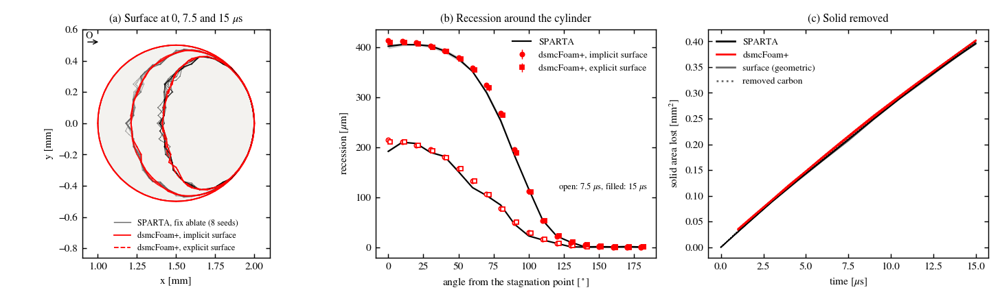
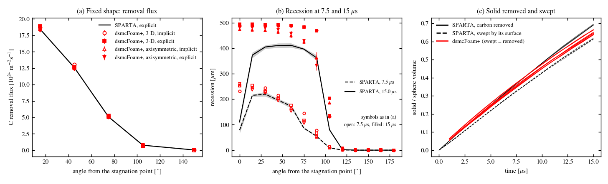
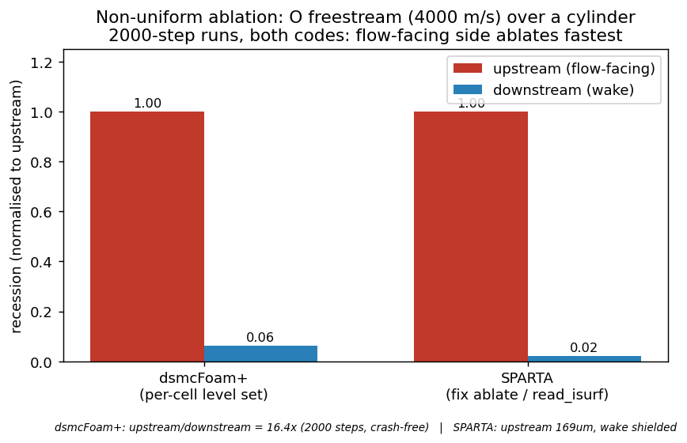

Immersed ablating surface
Verified: the two SPARTA-like representations of the immersed
ablating surface on the fixed DSMC mesh: surfaceType implicit
(values at the mesh points, rebuilt by marching squares in 2-D and
marching tetrahedra in 3-D) and surfaceType explicit (a closed
STL clipped by every cell). Both use exact particle crossing and the
flow volume of the cut cells, recede monotonically and sweep exactly
the removed solid volume, on 2-D, 3-D and axisymmetric meshes, in
serial and parallel. Against: the exact geometry, the removed
mass, SPARTA’s explicit surface at fixed shape, and SPARTA’s
implicit surface with fix ablate under recession. The surface
chemistry on these surfaces is verified in
B5b: surface chemistry on the immersed surface, in three dimensions in Three-dimensional immersed sphere and SPARTA twin,
and applied to a production mechanism in Application: carbon cylinder under the ACA mechanism.
Geometry of the reconstructed body
Body |
Mesh |
\(R/h\) |
Area/exact |
Volume/exact |
|---|---|---|---|---|
cylinder, 2-D, implicit |
80 \(\times\) 80 \(\times\) 1 |
10 |
0.99939 |
0.99781 |
sphere, 3-D, implicit |
203 |
4 |
0.98295 |
0.96871 |
sphere, 3-D, implicit |
403 |
8 |
0.99574 |
0.99213 |
sphere, axisymmetric 5° wedge, implicit |
80 \(\times\) 40 |
10 |
0.99842 |
0.99691 |
cylinder (SPARTA’s 180-gon), 2-D, explicit |
80 \(\times\) 80 \(\times\) 1 |
10 |
0.99995 (= 180-gon) |
0.99980 (= 180-gon) |
icosphere of 20480 triangles, wedge, explicit |
80 \(\times\) 40 |
10 |
0.99972 |
0.99948 |
The implicit body is slightly small (second-order error); use \(R/h \ge 10\) in 3-D for a volume error below 0.5 %. The explicit surface reproduces its own triangulation.
Fixed shape against SPARTA
Carbon cylinder (R = 0.5 mm) in atomic O (4 km/s, 1000 K, 2e22 m-3), O + C(s) → CO with probability 0.352736, diffuse re-emission at 2000 K, physical graphite density; four runs per variant, SPARTA with its explicit 180-segment circle.
Wall representation |
Carbon removal / SPARTA |
Front 0-30° |
|---|---|---|
body-fitted wall (moving-mesh solver) |
1.006 \(\pm\) 0.003 |
1.004 \(\pm\) 0.005 |
former level set (end-of-step detection, full cell volume) |
1.027 \(\pm\) 0.004 |
1.034 \(\pm\) 0.004 |
implicit surface, full cut-cell volume |
1.021 \(\pm\) 0.003 |
1.024 \(\pm\) 0.004 |
implicit surface, cut-cell flow volume (default) |
1.006 \(\pm\) 0.002 |
1.006 \(\pm\) 0.004 |
explicit surface (180-gon as an STL) |
1.006 \(\pm\) 0.003 |
1.000 \(\pm\) 0.007 |
The +2.7 % of the former level set came mostly from the collision rate of the cut cells: with their gas volume the implicit surface gives exactly what the body-fitted wall gives. SPARTA’s own implicit surface gives 0.9998 \(\pm\) 0.0011 of its explicit result.
Recession against SPARTA’s fix ablate
The same cylinder with the solid density divided by 1.5e5 (51 % of
the body ablated in 15 µs). SPARTA: create_isurf voxel 127.5,
fix ablate every step, 8 seeds.
\(t\) [µs] |
Removed carbon, dsmcFoam+/SPARTA |
Swept/removed, SPARTA |
Swept/removed, dsmcFoam+ |
|---|---|---|---|
1.5 |
1.035 \(\pm\) 0.006 |
0.951 |
1.0000 |
3.0 |
1.013 \(\pm\) 0.011 |
0.983 |
0.9999 |
7.5 |
1.004 \(\pm\) 0.004 |
0.980 |
0.9998 |
15.0 |
1.006 \(\pm\) 0.002 |
0.990 |
0.9995 |
With the monotone recession the implicit surface removes 1.004 and
the explicit surface 1.002 of SPARTA’s carbon at 15 µs, both with
swept/removed = 1.0000, 0 parcels inside the solid and 0 cells that
lost gas. Recession at 15 µs, implicit / explicit / SPARTA:
413 \(\pm\) 1 / 409 \(\pm\) 2 / 402 \(\pm\) 5 µm at 0°,
359 \(\pm\) 4 / 354 \(\pm\) 5 / 351 \(\pm\) 1 µm at 60°.
On average the recession agrees to about 3 µm; SPARTA’s surface
trails its removed carbon by about 1.6 cells of solid, because
fix ablate takes each cell’s removal from its smallest corner
values.


Panels: (a) Surface at 0, 7.5 and 15 µs, SPARTA fix ablate (8 seeds)
and dsmcFoam+ implicit and explicit surfaces; (b) recession around
the cylinder; (c) solid removed, geometric and from the removed
carbon.
Sphere: 3-D and axisymmetric
Carbon sphere (R = 0.5 mm, \(R/h\) = 10) in the same stream; a quarter domain on 4 processors and a 5° wedge, each with both surfaces, against SPARTA’s 3-D explicit icosphere at fixed shape.
dsmcFoam+ |
Whole sphere |
0-30° |
30-60° |
60-90° |
|---|---|---|---|---|
3-D, implicit |
1.018 \(\pm\) 0.012 |
1.013 |
1.038 |
1.011 |
3-D, explicit |
1.009 \(\pm\) 0.008 |
1.023 |
1.006 |
1.031 |
axisymmetric, implicit |
0.996 \(\pm\) 0.009 |
0.998 |
0.998 |
0.992 |
axisymmetric, explicit |
0.984 \(\pm\) 0.008 |
0.988 |
0.979 |
0.986 |
Under recession every dsmcFoam+ run sweeps exactly what it removes (swept/removed 1.00000) with 0 parcels inside the solid; the wedge reproduces the 3-D removal rate to 0.3-1 % between 6 and 15 µs. A stressed explicit 3-D surface without the hand-over to the implicit representation breaks (7249 parcels inside the solid); with it, 0. SPARTA’s 3-D implicit surface sweeps only 0.886 of its removed carbon (0.89 with the 27 Aug 2026 version), so its 3-D recession depth is not a reference at this level.


Panels: (a) Fixed-shape carbon removal flux around the sphere, SPARTA explicit against the four dsmcFoam+ variants; (b) recession at 7.5 and 15 µs; (c) solid removed and swept, SPARTA against dsmcFoam+ (swept = removed).
Earlier level-set comparison
Before the implicit and explicit surfaces, a per-cell signed-distance
level set (perCellRecession true) was compared with SPARTA on the
same directed O stream (4000 m/s, 1000 K, 2e22 m-3): both
codes predict an upstream-dominant recession (dsmcFoam+ upstream/wake
ratio 16.4). This path remains selectable; the implicit surface
replaces it.


Level-set recession pattern of dsmcFoam+ against SPARTA’s
fix ablate in a directed O stream.
Run it yourself
Two tutorials repeat the geometry and mass-closure checks of the
receding cylinder on one core
(Verification tutorials (gas-surface interaction)):
tutorials/verification/gsi/IMM_implicitRecession (implicit
surface) and tutorials/verification/gsi/IMM_explicitRecession
(SPARTA’s 180-segment circle as an STL). Each checks the perimeter and
area of the initial body against an oracle computed by the check
script, the area swept by the receding surface against the removed
carbon (exact mass closure), and that no parcel is found inside the
solid and no cut cell loses gas; the explicit one also checks that the
surface stays explicit. The runs are shortened to 3.75 µs, since the
checks are identities that hold at every step. Run ./Allrun in the
tutorial directory; the last line is PASS: n/n metrics pass and the
figure is written to plots/.
Three more tutorials repeat the fixed-shape comparison with SPARTA:
tutorials/verification/gsi/IMM_implicitCylinder,
IMM_explicitCylinder and MOV_bodyFittedCylinder (body-fitted
wall of dsmcFoamAblation). Each runs 7.5 µs on one core (about
45-55 min) and checks the carbon removal over the whole surface and
at 0-30° against SPARTA’s 180-segment cylinder (tolerances 0.025 and
0.04); the immersed ones also check that no parcel is found inside
the solid. The stored SPARTA result was rerun on 2026-10-03 with the
collision data of the frozen species database (masses and VHS pairs
of species_frozen.py, the CO-O pair given to SPARTA as a
cross-species line so that SPARTA does not mix the species values;
two replicas). Against it, seeds 11 and 12 give 1.009 and 1.003
(implicit), 1.008 and 1.005 (explicit), 1.012 and 1.001
(body-fitted) over the whole surface. The earlier twin, with the
pre-freeze data, removed 4.2 % less carbon (1.5 % at the front,
24-200 % on the flank and lee side), which is why the immersed
surface had shown 1.05 before the rerun. The SPARTA twin of the
recession comparison (fix ablate) still uses the pre-freeze data,
so the two recession tutorials print the removed carbon against it
for information only.
Reproduce
run/GSI/ablationShape/: make_cylinder.py, make_sphere.py,
run_implicit.sh, run_sphere.sh, compare_one_to_one.py,
compare_recession.py, compare_sphere.py; SPARTA inputs in
sparta_ablation/ and sparta_sphere/; fixed-cylinder twin on
the frozen collision data in sparta_cylinder_frozen/
(make_twin_frozen.py, make_reference_csv.py). Level-set comparison:
run/2D/freestreamAblation and run/2D/sparta_freestreamAblation.
Notes: docs/Development/Verification/gsi/implicit_surface.md,
per_cell_recession.md, freestream_recession_comparison.md.